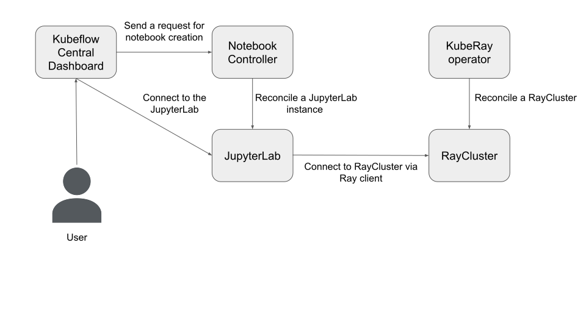

Kubeflow: 交互式开发解决方案
Contents
Kubeflow: 交互式开发解决方案#
Credit: 此清单大量引用了 Google Cloud 的工程博客 “在 Google Kubernetes Engine 上使用 Kubeflow 和 Ray 构建机器学习平台” 。
Kubeflow 项目致力于使 Kubernetes 上的机器学习 (ML) 工作流程部署变得简单、可移植且可扩展。
要求#
依赖关系
kustomize: v3.2.0 （Kubeflow 清单对kustomize版本敏感)Kubernetes: v1.23
计算资源：
16GB 内存
8 CPU
示例：使用 Kubeflow 提供交互式开发环境#

步骤 1: 使用 Kind 创建 Kubernetes 集群#
# Kubeflow is sensitive to Kubernetes version and Kustomize version.
kind create cluster --image=kindest/node:v1.23.0
kustomize version --short
# 3.2.0
步骤 2: 安装 Kubeflow v1.6-branch#
此示例使用 v1.6-branch 安装 Kubeflow。
使用 一条命令 安装所有 Kubeflow 官方组件和所有常用服务。
果您不想安装所有组件，可以从 example/kustomization.yaml 注释掉 KNative、 Katib、 Tensorboards Controller、 Tensorboard Web App、 Training Operator 或 KServe 。
步骤 3: 安装 KubeRay operator#
按照 文档 通过 Helm 存储库安装最新的稳定 KubeRay Operator。
步骤 4: 安装 RayCluster#
# Create a RayCluster CR, and the KubeRay operator will reconcile a Ray cluster
# with 1 head Pod and 1 worker Pod.
helm install raycluster kuberay/ray-cluster --version 1.0.0-rc.0 --set image.tag=2.2.0-py38-cpu
# Check RayCluster
kubectl get pod -l ray.io/cluster=raycluster-kuberay
# NAME READY STATUS RESTARTS AGE
# raycluster-kuberay-head-bz77b 1/1 Running 0 64s
# raycluster-kuberay-worker-workergroup-8gr5q 1/1 Running 0 63s
此步骤
rayproject/ray:2.2.0-py38-cpu作为镜像。Ray对服务器端（RayCluster）和客户端（JupyterLab）之间的Python版本和Ray版本非常敏感。该镜像使用：Python 3.8.13
Ray 2.2.0
步骤 5: 转发 Istio 的 Ingress-Gateway 端口#
按照 说明 转发 Istio 的 Ingress-Gateway 端口并登录 Kubeflow Central Dashboard。
步骤 6: 通过 Kubeflow Central Dashboard 创建 JupyterLab#
单击左侧面板中的“笔记本”图标。
单击“新建笔记本”
选择
kubeflownotebookswg/jupyter-scipy:v1.6.1作为 OCI 镜像。点击 “Launch”
点击 “CONNECT” 连接到 JupyterLab 实例。
步骤 7: 使用 JupyterLab 中的 Ray 客户端连接到 RayCluster#
Warning: Ray 客户端有一些已知的 限制 ，并且没有得到积极维护。我们建议改用 Ray Job Submission 。
正如步骤 4 提到的，Ray对服务器端（RayCluster）和客户端（JupyterLab）之间的Python版本和Ray版本非常敏感。在 JupyterLab 中打开终端：
# Check Python version. The version's MAJOR and MINOR should match with RayCluster (i.e. Python 3.8) python --version # Python 3.8.10 # Install Ray 2.2.0 pip install -U ray[default]==2.2.0
通过 Ray 客户端连接到 RayCluster。
# Open a new .ipynb page. import ray # ray://${RAYCLUSTER_HEAD_SVC}.${NAMESPACE}.svc.cluster.local:${RAY_CLIENT_PORT} ray.init(address="ray://raycluster-kuberay-head-svc.default.svc.cluster.local:10001") print(ray.cluster_resources()) # {'node:10.244.0.41': 1.0, 'memory': 3000000000.0, 'node:10.244.0.40': 1.0, 'object_store_memory': 805386239.0, 'CPU': 2.0} # Try Ray task @ray.remote def f(x): return x * x futures = [f.remote(i) for i in range(4)] print(ray.get(futures)) # [0, 1, 4, 9] # Try Ray actor @ray.remote class Counter(object): def __init__(self): self.n = 0 def increment(self): self.n += 1 def read(self): return self.n counters = [Counter.remote() for i in range(4)] [c.increment.remote() for c in counters] futures = [c.read.remote() for c in counters] print(ray.get(futures)) # [1, 1, 1, 1]